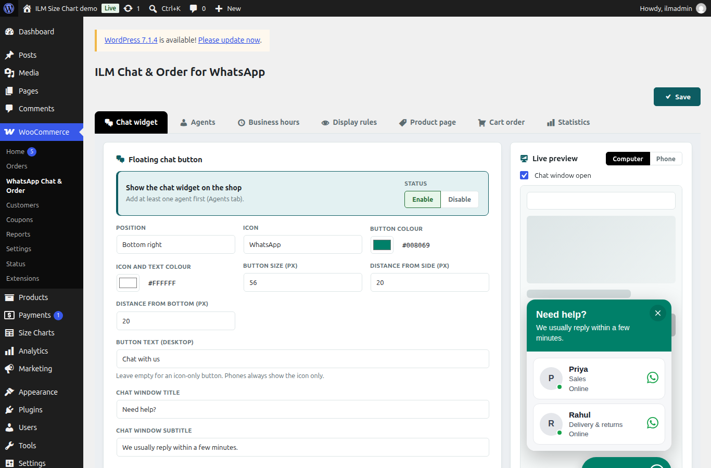
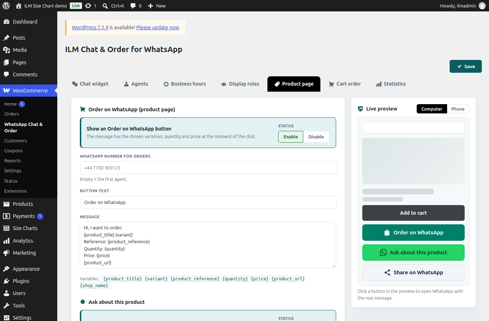

The Statistics tab shows clicks in the last 90 days. A click is counted when a shopper clicks a WhatsApp link. No personal data and no phone numbers of shoppers are stored.
At the top you see the totals for each kind of click. Below that you see Chats per agent, and a table of the Last 30 days with clicks. If there are no clicks yet, the table shows a short note instead.
The preview on the right of the settings page shows the widget and buttons as shoppers see them. Click a button in the preview to open WhatsApp with the real message.

